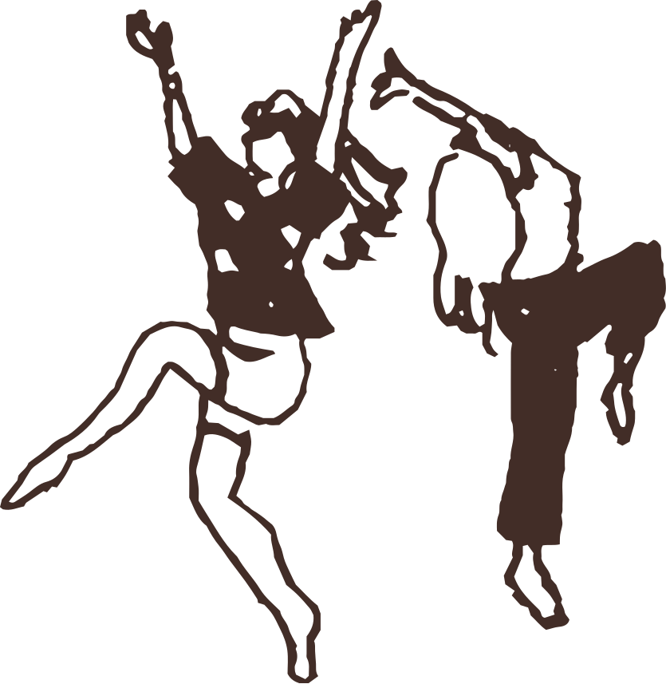
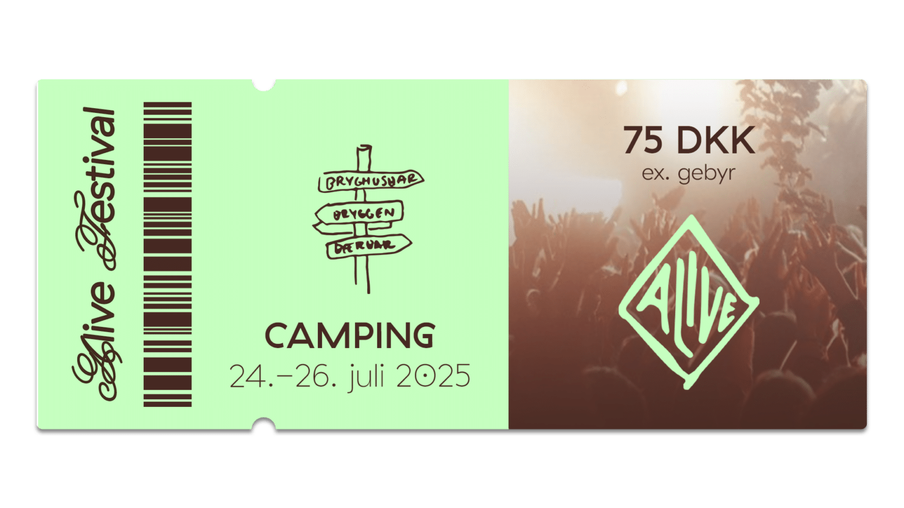
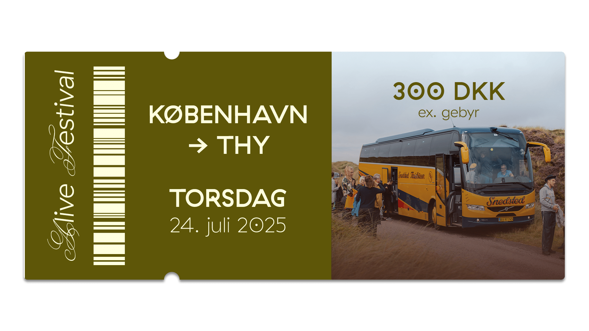
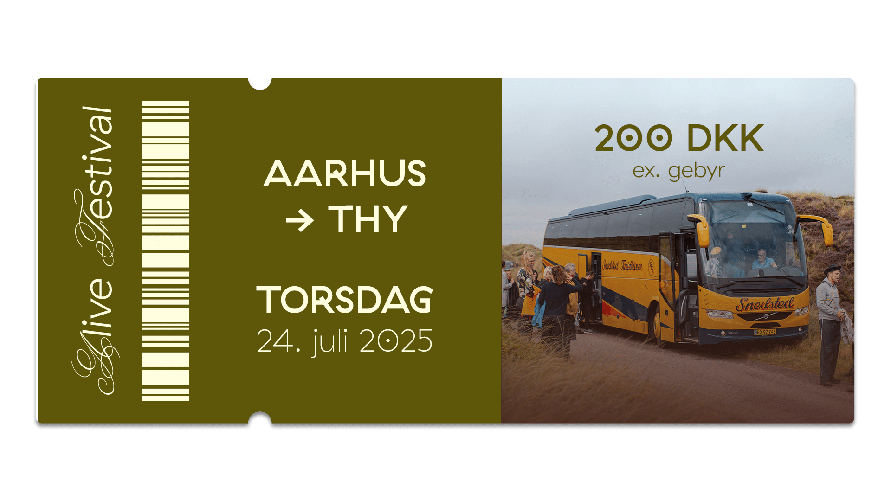
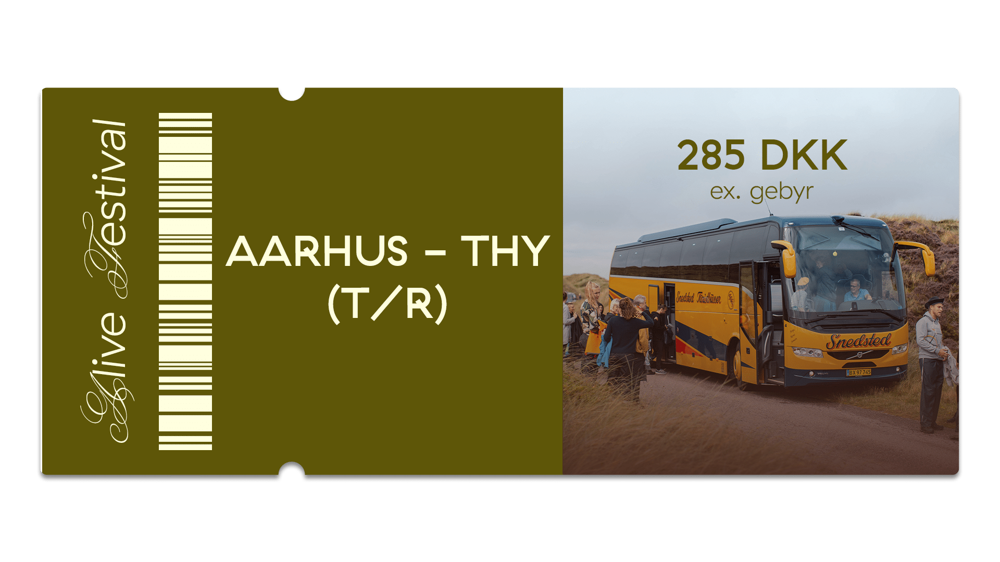
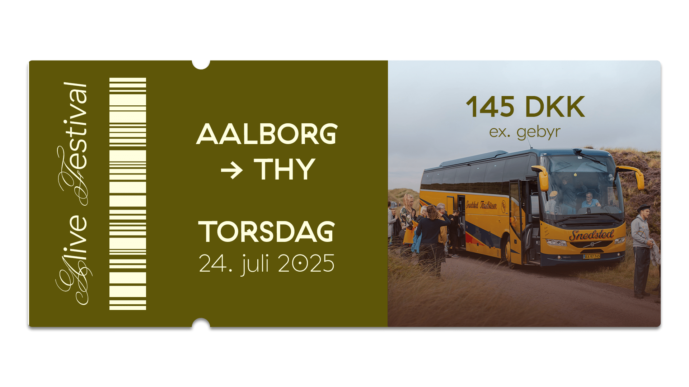
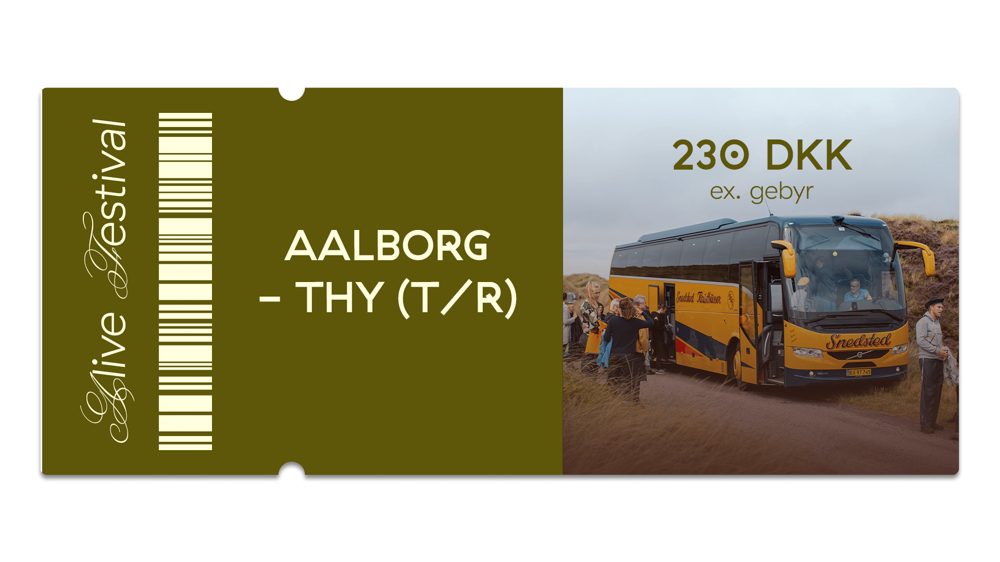

Tager du bilen, er der mulighed for gratis parkering tæt på festivalpladsen. Der er flest pladser ved Thisted Bibliotek ét minuts gang fra festivalpladsen. Parkeringen har adressen: Bibliotekspladsen 1, 7700 Thisted.
Du kan tage toget fra Thisted station til hele landet. Stationen ligger under en kilometer fra camping- og festivalpladsen. Din rejse kan du planlægge på Rejseplanen, og på DSBs hjemmeside og app kan du være heldig at finde en orangebillet til en god pris og derved spare lidt på din rejse.
Det er også muligt at købe transportbillet til bus på billetsiden. Vi har egne busser der kører fra både København og Aarhus. Her kan du vælge at købe en tur/retur billet eller blot en enkelt.
Afgang fra København:
Torsdag d. 23. juli kl. 08:00 fra DGI-byen på Ingerslevsgade, 1705 København V.


Afgang fra Aarhus:
Torsdag d. 23. juli kl. 08:00 fra Musikhuset på Thomas Jensens Allé 2, 8000 Aarhus


Afgang fra Aalborg:
Torsdag d. 23. juli kl. 09:00 fra Perron 1 på Aalborg Rutebilstation, 9000 Aalborg


Afgang fra festivalen til henholdsvis København, Aarhus og Aalborg: søndag d. 26 kl. 11:00
